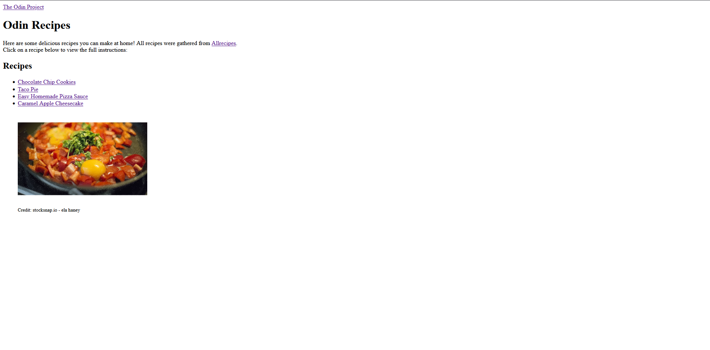
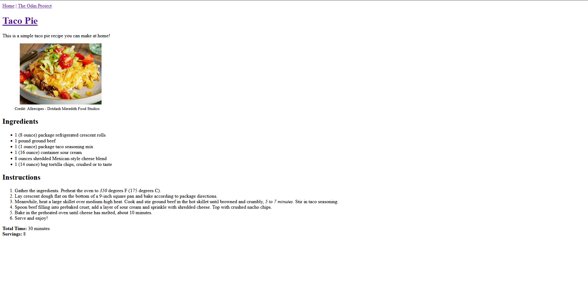
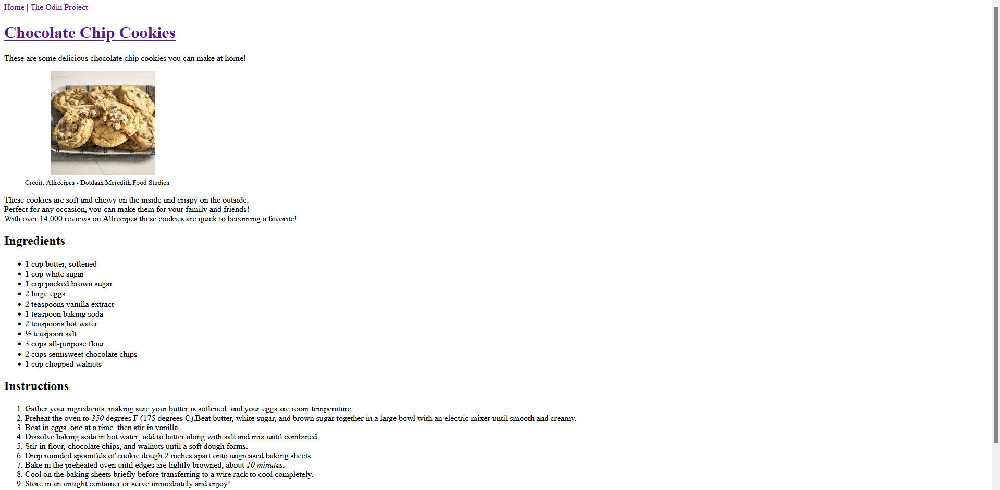

This is a simple recipe website, it doesn't have much, but is my first project through "The Odin Project".
View the Recipe Website - Odin Recipes

Click to enlarge

Click to enlarge

Click to enlarge
Currently there are no complete or inactive projects to display.